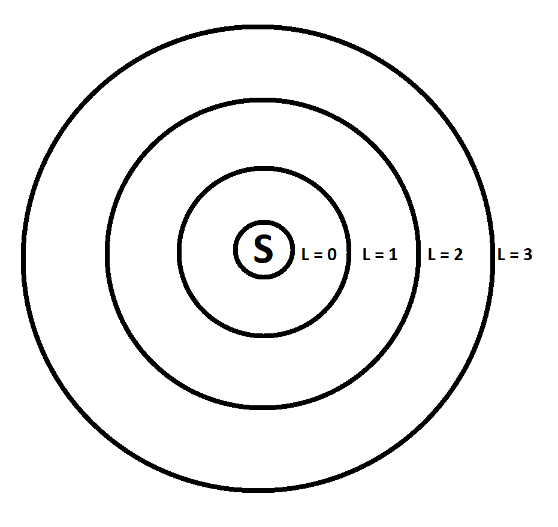
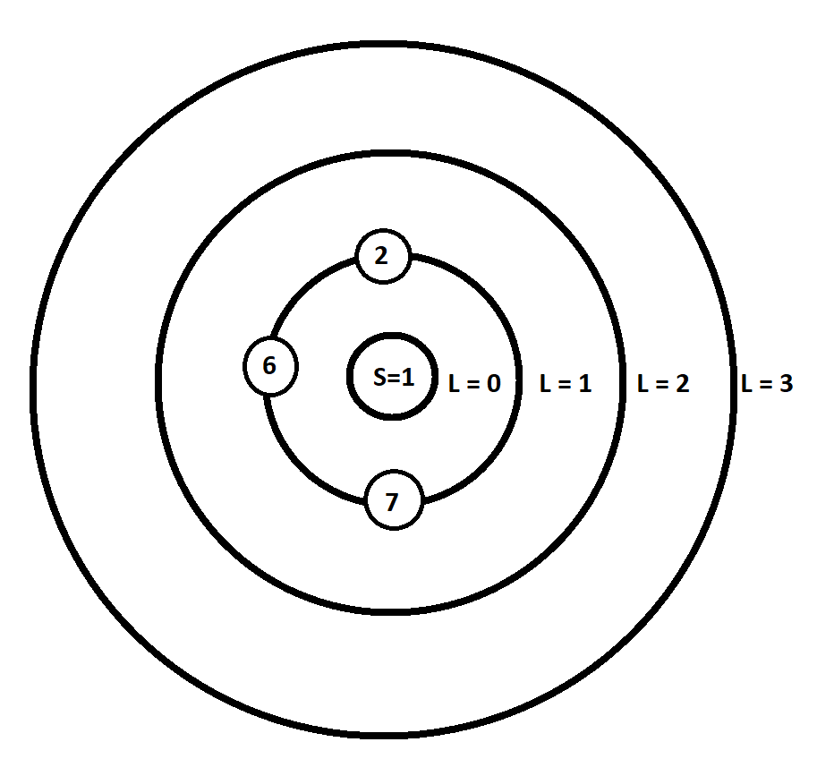

Breadth First Search (BFS) tutorials. Part: 1
Introduction to Breadth First Search (BFS).
Breadth First Search (BFS) is one of the most basic and essential graph traversal algorithm. Many problems can be solved using bfs.
After learning bfs we will learn some applications of bfs through solving problems. This searching technique can be used in both directed and undirected graphs. But it has to be an unweighted graph. This is a single source shortest path (SSSP) algorithm.
To understand an algorithm clearly, you must imagine the whole process in your mind while reading.
Problem: You’re given an unweighted, undirected and connected graph. And a source s is specified. For every node in this graph, you’ve to tell what is the minimum number of edges you’ve to traverse to reach that node from s? In other word what is the shortest path from node s to current node?
Let’s solve this problem for the following graph. For this source node s = 1.

Let’s see how we can solve this problem. This is an unweighted graph. We have to find the number of edges in the shortest path. So, we will assume the weight of each node as 1. First we will discuss about the idea then we’ll jump to coding part.
Let’s create a Ring of Fire like the following picture:

The center of the Ring of Fire is source s. Fire will spread from the center. So, the level of center equal to 0. Here, level means the distance of the circle from the center.
From source s, fire will spread to level 1. After level 1 gets ignited, fire will spread to level 2. After level 2 burnt up, fire will spread to level 3 from level 2.
Let’s make the source s = 1. As node 1 is in the center, so the level of node 1 equal to 0. We can directly go to node 2, 6 and 7 from node 1. Let’s put the nodes 2, 6 and 7 to the level 1 circle.
After we fill the level 1 circle with nodes, it’ll look like following image:

We finished working with node 1 and level 0. Now we’ll start working with the nodes of level 1.
We can go to node 3 from node 2 of level 1. Let’s put node 3 to level 2 circle of the ring.
We can also go to node 1 from node 2. But we already putted node 1 in the Ring of Fire. So, we won’t put it again. Once we put a node to the ring, we won’t put it again. Because, if we put node 1 to level 2 circle, the distance of node 1 from the center will increase. But node 1 is already in the center.
Now we’ll work with node 6. From node 6, we can visit node 1, 4 and 9. But we already visited node 1. So, we’ll put node 4 and 9 to the level 2 circle.
Now we’ll work with node 7. From node 7, we can visit unvisited node 8. Let’s put node 8 to the level 2 circle.
We are finished working with the nodes of level 1.
Now the Ring of Fire will look like following:

We already finised working with level 0 and level 1. Now we'll work with level 2.
We’ll put the adjacent nodes of level 2 to level 3.
From node 3 of level 2 we can go to node 4. But we already visited node 4. If we put node 4 to the level 3, the distance of node 4 will become 3. But node 4 is already in its shortest distance, which is 2. So we won’t put node 4 to level 3. It also applicable for node 2.
Now we’ll work with node 4. We can visit new node 5 from node 4. Let’s put node 5 to the level 3 circle. From node 9 of level 2 we can go to new node 10. Let’s put node 10 to the level 3 circle. From the last node of level 2 which is 8, we can’t visit any new nodes.
Now we have the following Ring of Fire:

We have finished our graph traversal. The shortest distance of every node is the level of the ring in which the node is currently staying.
From source 1 we can go to nodes 2, 6 and 7 by using only one edge. We can go to nodes 3, 4, 8 and 9 by using only 2 edges. Using 3 edges we can visit node 5 and 10 from the source.
We found the shortest path of every node from the source s. So, we started our journey from s. At first we took the adjacent nodes of s and put them in level 1. Then we took the unvisited adjacent nodes of level 1 nodes. And put them in level 2. We can’t visit the nodes of level 2 by using less than 2 edges. Because if we can they wouldn’t be in the level 2, they would be in the level 1. We have to repeat that process until we visit every reachable nodes.
Can you clearly understand the process of this algorithm? If you can’t, please read again from the beginning.
Can you transfer the idea into code?
Please try yourself before moving into the rest of the blog post!
Coding Part:
We’ll use the same graph to understand the coding process. We started our journey from source node 1. After we finished with node 1, we started to process nodes 2, 6 and 7. After we finished working with them, we started to work with the next level nodes 3, 4, 8 and 9. After we finished working with them we started to work with the next level nodes 5 and 10. You can see that, we are working in a particular order. The nodes we put in the ring first, we are working with them first.
So we'll use the queue data structure.
Queue is a First-In-First-out (FIFO) data structure. Commonly used in situations where you want to process items in the order they are created or queued.
We’ll use the queue as a container of the Ring of Fire.
We’ll store an extra information while coding the algorithm. That is, from which node we came to the current node. In other word, we’ll save the information of the parent node for each node.
At first we need a vector to save the graph.
vector < int > graph [ 12 ];
Then we need two integer arrays to save the parents and the levels.
int level [ 12 ] , parent [ 12 ];
To keep track of the visited nodes, we need a boolean array.
bool visited [ 12 ];
We need a queue to process the bfs algorithm.
queue < int > qu;
Now its time to take input of the graph.
int n , m , a , b;
cin>>n>>m; ///n = number of nodes , m = number of edges
for ( int i = 1 ; i <= m; i++ )
{
cin>>a>>b; ///Input edges
graph [ a ].push_back( b );
graph [ b ].push_back( a );
}
Let’s push the source node 1 to the qu and make the level of source node equal to 0. Then mark source as visited. Node 1 is the source, so it has no parent. Let’s make the parent of this node equal to 1.
qu.push( 1 ); ///Taking source node to the queue visited [ 1 ] = 1; ///Marking source node as visited level [ 1 ] = 0; ///Level of source node = 0 parent [ 1 ] = 1;
The algorithm will run until we finish working with all reachable nodes. So, the work is done while our qu gets empty. We can do this using a while loop!
Inside the while loop, every time we will take the front node and pop this node from the qu. Let’s save the number of adjacent nodes of the front in a viable called sz. Then by iterating over the adjacent nodes let’s check which nodes are still not visited.
For every unvisited node, let’s push it to the qu and mark this node as visited. Let’s set the level of this node +1 than its parent (current front node of the qu) and save the front node as its parent.
while( !qu.empty() )
{
a = qu.front();
qu.pop();
int sz = graph [ a ].size();
for ( int i = 0; i < sz; i++ ) ///Iterating child nodes.
{
b = graph [ a ] [ i ];
if ( !visited [ b ] ) ///Checking if already visited.
{
qu.push( b );
visited [ b ] = 1;
level [ b ] = level [ a ] + 1;
parent [ b ] = a;
}
}
}
We finished our implementation!
For better understanding you can simulate the whole process.
Now with a simple loop we can check the shortest part of each node from the source with the level array.
If we've asked to find the distance for a specific node, we can exit bfs as soon as we find that node. In that case run time of the bfs can reduce!
If we are asked to print the whole shortest path from node 1 to node 5, how can we do that?
Can we find the whole path using the parent array?
Please try to do it yourself first!
There will be a path between two nodes only if they are part of the same component. We can check it with an if condition.
if ( !visited [ target ] ) cout<<"No path found from"<< source<< " to "<< target<<"\n";
We have to find the path from source node to the target node using parent array. We saved which node is the parent of which node in our parent array. Instead of going from source to target, let’s go target to source. We will jump to the parent node of target node. Then jump to its parent node and so on. We’ll continue jumping till we reach the source node.
We’ll use a vector to save our path. Then start our loop from target. Let’s put the target in a variable named i. Every time we will push the i in our path vector and then update the variable i with its parent. We’ll continue jumping until we reach the source node.
///Traversing from target to source
for (int i = target; i != source; i = parent [ i ] )
path.push_back( i );
path.push_back( source );
///We have the path in reversed order. So, we are reversing the path.
reverse( path.begin(), path.end() );
cout<<"Path from source to target : ";
for ( int i = 0 ; i < path.size(); i++ )
cout<< path [ i ] <<" ";
What is the time complexity of our algorithm?
We are visiting each node only once and each edge once. So total time complexity of our algorithm is O(n+m) where n is the number of nodes and m is the number of edges.
Whole code with C++
In the next parts of this series we’ll learn some applications of Breadth First Search through solving programming problems.
Start reading Part 2!
Start reading Part 3!
Start reading Part 4!